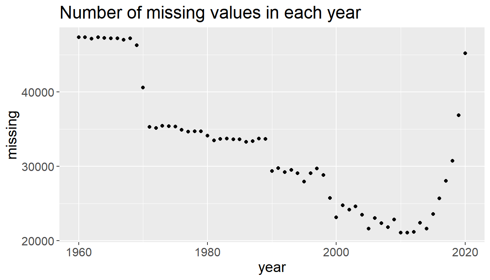
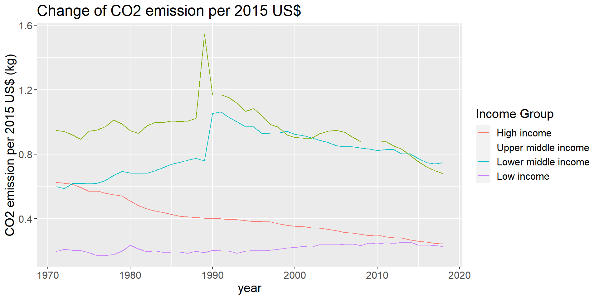

Chapter 4 Missing values
4.1 Missing values by year
We first examine the missing condition in each year. We draw a plot to show the total number of missing values in each year 
From the figure, we can see that the missing count is segmented roughly in decades. 1960s have the highest missing rate and the recent two years also miss many data. 1970s and 1980 have moderate high missing rate and 2000-2018 have the lowest missing rate. However, even the lowest missing count is more 20 thousand, almost 1/3 of 60,543 records. Therefore, we concentrate on the time period 1971-2018 and we have to continue to check out the missing condition in each indicator.
4.2 Missing values by indicator
We then investigate the difference of missing values by indicators. We draw a plot that shows the distribution of average missing amount in 1970-2018 of each indicator
We can see that there are many “high quality” indicators that have less than 50 missing values on average. However, there are also many indicators have more than 100 missing values. We drop the indicators that miss more than 150 values on average, since the remaining ones can not support a comprehensive investigation on them. 198 out of 279 selected indicators are left.
4.3 Missing values by country
At last, we examine the missing condition in each country. Since the data collecting difficulty in countries with different developing condition maybe different, we facet the data with income group.

It was a little bit surprising that most of the countries that have high level of missing data are high income countries, which are supposed to have more robust data collecting systems. Luckily, the total number of high income country is large and it doesn’t have much influence to remove some of them. Therefore, we only retain the countries that have less than 150 average missing values. After that, 197 out of 217 countries is under observation.